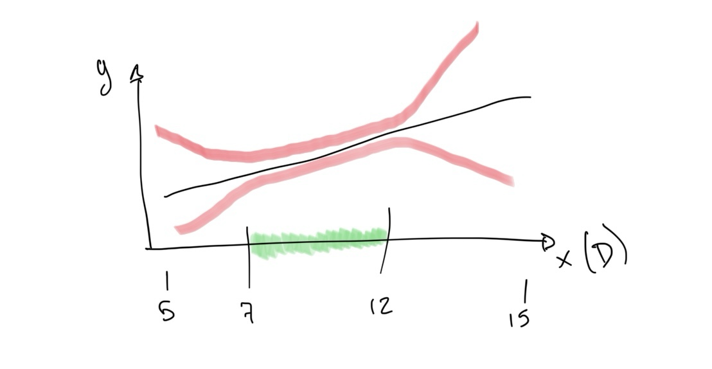

Introduction
Deep learning methods can be highly accurate and efficient, but that comes at a cost. Typically, the generalisability of the methods is compromised outside the range of parameters in which they have been trained on. As an example of this, if a network is trained to predict thickness values between 7mm and 12mm, outside of this range the network output is not necessarily very accurate.
Uncertainty quantification methods in deep learning help:
- Identifying when the model is working outside the predefined domain of operation;
- Improving robustness of predictions on average;
- Characterise the data and model variability;
Applications
Models and inspections in engineering applications often require the quantification of uncertainty in order to be qualified. This is even more evident in the case of safety-critical applications, where conservatism and probabilistic measurements are necessary.
In the area of Non-Destructive Evaluation (NDE), inspection qualification requires a full in-depth analysis of the methods involved, even if they are digital. When talking about deep learning and NDE, this is very important as deep learning typically acts as an opaque box model that makes it difficult to interpret. At least, a measure of the uncertainties would be required.
Research work
The work carried out in this area is nowadays focused on rigorously characterising the uncertainty related to the deep learning model (AKA epistemic uncertainty). This is being done through deep ensembles as it is the most rigorous technique to estimate epistemic uncertainty. Next steps will involve the comparison with other, more efficient, techniques for uncertainty quantification such as Flipout, Bayesian networks, among others.
This work is being partially funded by the UK Research Centre for Non-Destructive Evaluation.